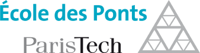

I am a PhD student in Optimization and Operations Research at Argon Consulting and the CERMICS. I work with my research advisors Vincent Leclère and Frédéric Meunier, and with Argon Consulting on arbitrage between reducing the costs and increasing the flexibility of supply chain.
|  | |
| Argon Consulting is an independent French consulting firm specialized in Supply Chain and located in the Paris area, in France. Its clients are large and middle-market companies, and investment funds in the manufacturing, the mass retail and the services industries, as well as public organizations. | The CERMICS is a laboratory of École des Ponts ParisTech located in the Paris area, in France. Its research activities cover various fields relative to Applied Mathematics such as Scientific Computing, Modeling, Optimization and Operations Research. |